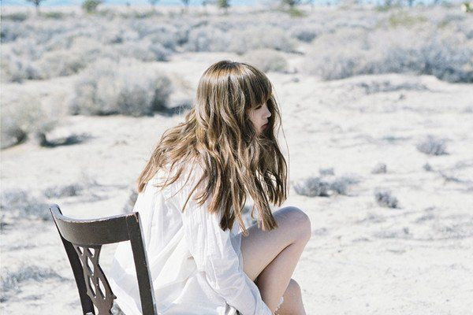

15歳の頃、歌唱による喉の酷使が原因で突如声が出なくなるアクシデントに見舞われるも、数年後には独特のハスキーで甘い歌声を得ることとなる。2011年にシングル「六等星の夜」でメジャーデビュー。 代表曲「蝶々結び」などを収録した4thアルバム「daydream」を2016年9月にリリースし、iTunesアルバムチャート1位などを獲得した他、CDショップ大賞2017において準大賞も受賞。2019年には16枚目のシングル「I beg you / 花びらたちのマーチ / Sailing」をリリースし、自身初のオリコン週間シングルランキング初登場1位を記録する。

2011年：
シングル「六等星の夜」でメジャーデビュー。12月14日には2nd single「Re:pray」をリリースし、そのアートワークがヨーロッパ最大ともいわれる写真コンペ「PX3」の音楽部門にて銀賞を受賞。
2012年：
4th single「あなたに出会わなければ～夏雪冬花～」がスマッシュヒットを記録。同曲は同年12月15日放送のTOKYO FM「桑田佳祐のやさしい夜遊び」(毎週土曜23:00～23:55 JFN 38net)にて、桑田佳祐が2012年にリリースされた邦楽の中から選んだ名曲20選の中の第5位に選ばれるなどした。続く1st album「Sleepless Nights」はオリコン初登場5位を記録し、2012年CDショップ大賞にノミネートもされる。
2013年：
5th single「RE:I AM EP」がオリコン初登場6位を記録。同年11月20日には阿部真央による初の書き下ろし楽曲「words」を収録したmini album「After Dark」をリリース。
2014年：
6th single「StarRingChild」がオリコン初登場3位を記録。6月25日には2nd album「Midnight Sun」と、澤野弘之とコラボレーションアルバムSawanoHiroyuki[nZk]:Aimer「Unchild」を同時発売し、オリコン同時TOP10入りを果たす。9月3日には菅野よう子らとコラボレーションしたmini album「誰か、海を。」をリリースし、そのアートワークはミュージック・ジャケット大賞 2015にて準大賞を受賞。
2015年：
ONE OK ROCK 2015 “35xxxv” JAPAN TOURのサポートアクトとして横浜アリーナにて2日間にわたってパフォーマンスを披露。6月3日には8th single「Brave Shine」をリリースし、iTunesでは総合シングルチャート1位を記録したほか、香港、シンガポール、インドネシア、タイなどのアジア各国でも1位を獲得。続く7月29日には3rd album「DAWN」をリリース。
2016年：
Taka（ONE OK ROCK）、TK（凛として時雨）がそれぞれ楽曲提供・プロデュースした両A面シングル「insane dream / us」を7月にリリース。続く8月には野田洋次郎（RADWIMPS）が楽曲提供＆プロデュースした11th single「蝶々結び」をリリース。そして9月21日には豪華アーティスト陣参加の4th album「daydream」をリリース。
2017年：
5月3日に初のベストアルバム「blanc」「noir」を2枚同時リリース。8月29日には初の日本武道館でのワンマンライブを開催し、13,000人を動員。全国26か所の映画館及び香港、台湾、韓国でライブビューイングも実施された。10月11日には13th single「ONE / 花の唄 / 六等星の夜 Magic Blue ver.」をリリースしオリコン週間2位を記録。
2018年：
15枚目のシングル「Ref:rain/眩いばかり」をリリース。続いてamazarashiとのタイバン形式によるアジアツアーを上海、台北、シンガポール、東京のアジア4都市・5公演を開催。9月には映画『累-かさね-』主題歌「Black Bird」をリリース。
2019年：
16枚目のシングル「I beg you / 花びらたちのマーチ / Sailing」をリリースし、自身初のオリコン週間シングルランキング初登場1位を記録。4月10日には5th album「Sun Dance」「Penny Rain」を2枚同時リリースし、Billborad Japan”Hot Albums”にて1位を記録。続く5月5日には日本テレビ系日曜ドラマ『あなたの番です』主題歌Aimer「STAND-ALONE」をデジタルシングルとしてリリース。8月にはTVアニメ「ヴィンランド・サガ」エンディングテーマ「Torches」を収録した17th singleをリリース。
2020年：
通算18枚目のシングル「春はゆく / marie」をリリースし、オリコン週間デジタルシングルランキングにて初登場1位を記録。9月9日にはデビュー9周年を記念した19th single「SPARK-AGAIN」をリリース。
2021年：
4月14日に6th album『Walpurgis』をリリースし、Billboard Japan Hot Albums・Download Albums・Top Albums Salesにて自身初の3冠を達成。